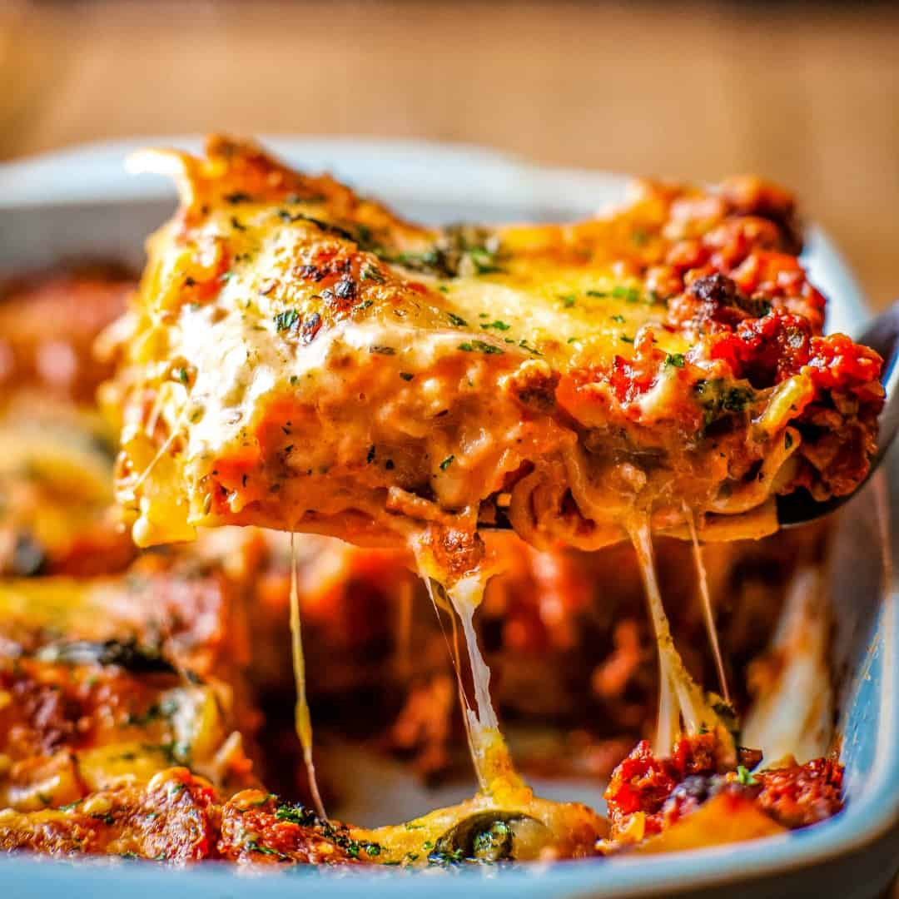

Classic Beef Lasagna

Description
Classic beef lasagna is an Italian comfort food staple built from stacked layers of rich meat sauce, flat pasta noodles, and velvety melted cheese. Slow-simmering the minced beef with tomatoes, garlic, and herbs creates a hearty sauce that balances the creamy ricotta filling.
Once baked in the oven, the mozzarella and parmesan top layer bubbles into an irresistible golden crust, holding the tender pasta layers firmly together
Ingredients
- 12 dry lasagna pasta sheets
- 500 g minced beef
- 1 medium onion, diced
- 3 cloves garlic, minced
- 800 g canned crushed tomatoes
- 2 tablespoons tomato paste
- 1 teaspoon dried oregano
- 1 teaspoon dried basil
- 1 teaspoon salt
- 1/2 teaspoon black pepper
- 400 g ricotta cheese
- 300 g shredded mozzarella cheese
- 50 g grated parmesan cheese
- 2 tablespoons olive oil
Steps
- Heat olive oil in a large skillet over medium heat and sauté the diced onion and garlic until fragrant.
- Add the minced beef and cook until thoroughly browned, breaking up any large clumps with a spoon.
- Stir in the crushed tomatoes, tomato paste, dried oregano, dried basil, salt, and black pepper.
- Lower the heat and simmer the meat sauce gently for 25 to 30 minutes until thick.
- Boil the lasagna pasta sheets in salted water according to the box instructions, drain, and set aside.
- Spread a thin layer of meat sauce across the bottom of a rectangular baking dish.
- Lay down a single layer of cooked pasta sheets directly over the sauce.
- Spread a layer of ricotta cheese over the noodles, ladle on meat sauce, and sprinkle with shredded mozzarella.
- Repeat the layering process until all ingredients are used, ending with a generous blanket of mozzarella and parmesan on top.
- Bake in a preheated oven at 190°C (375°F) for 25 minutes until the top is golden and bubbling.
- Rest the dish for 15 minutes before slicing so the layers set cleanly.
Odin Recipes